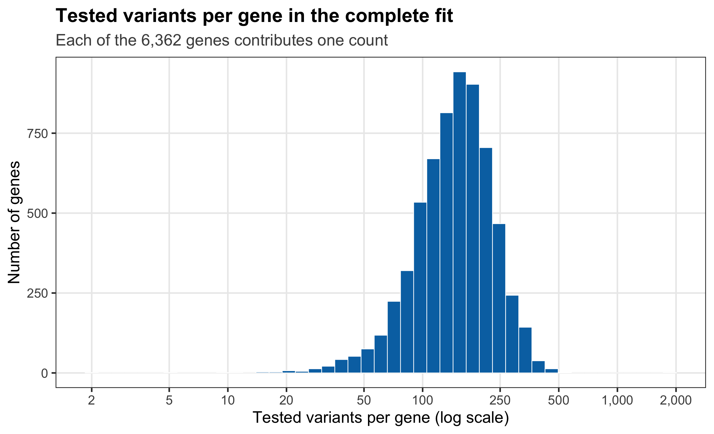
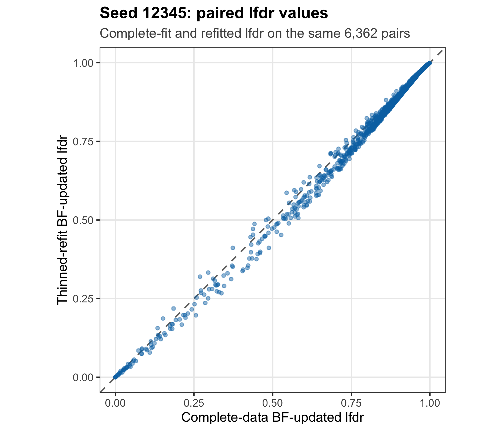
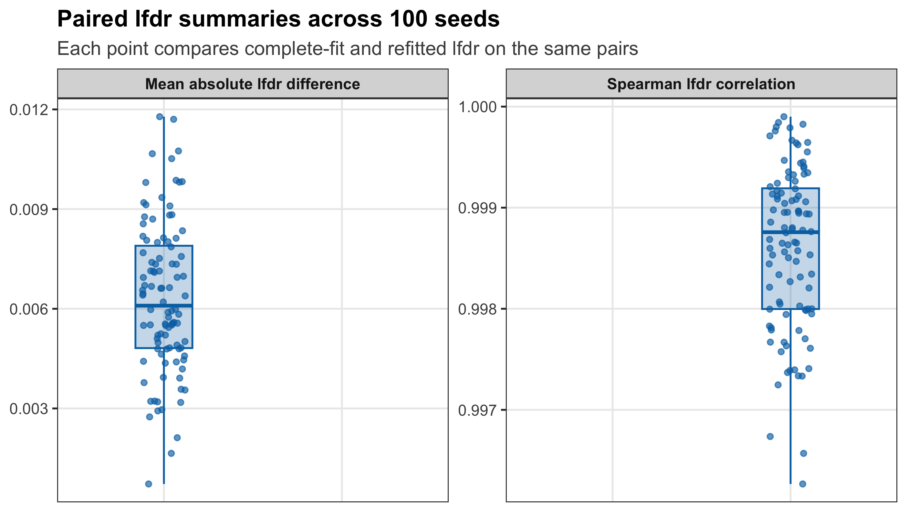
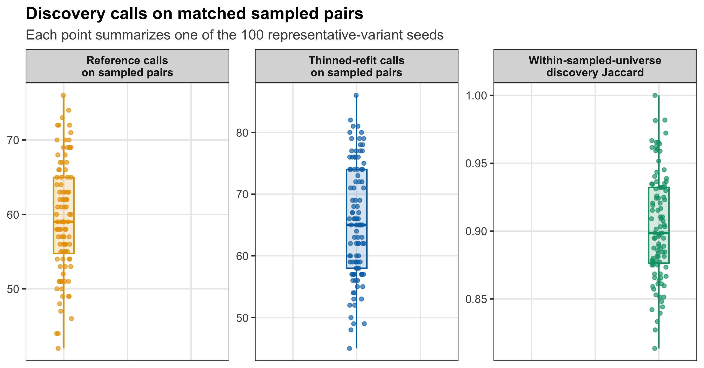

Revision Real-data Sensitivity R5: one random variant per gene
Ziang Zhang
2026-08-21
Last updated: 2026-08-21
Checks: 6 1
Knit directory: coderepo-local/
This reproducible R Markdown analysis was created with workflowr (version 1.7.2). The Checks tab describes the reproducibility checks that were applied when the results were created. The Past versions tab lists the development history.
The R Markdown file has unstaged changes. To know which version of
the R Markdown file created these results, you’ll want to first commit
it to the Git repo. If you’re still working on the analysis, you can
ignore this warning. When you’re finished, you can run
wflow_publish to commit the R Markdown file and build the
HTML.
Great job! The global environment was empty. Objects defined in the global environment can affect the analysis in your R Markdown file in unknown ways. For reproduciblity it’s best to always run the code in an empty environment.
The command set.seed(20251109) was run prior to running
the code in the R Markdown file. Setting a seed ensures that any results
that rely on randomness, e.g. subsampling or permutations, are
reproducible.
Great job! Recording the operating system, R version, and package versions is critical for reproducibility.
Nice! There were no cached chunks for this analysis, so you can be confident that you successfully produced the results during this run.
Great job! Using relative paths to the files within your workflowr project makes it easier to run your code on other machines.
Great! You are using Git for version control. Tracking code development and connecting the code version to the results is critical for reproducibility.
The results in this page were generated with repository version c87957a. See the Past versions tab to see a history of the changes made to the R Markdown and HTML files.
Note that you need to be careful to ensure that all relevant files for
the analysis have been committed to Git prior to generating the results
(you can use wflow_publish or
wflow_git_commit). workflowr only checks the R Markdown
file, but you know if there are other scripts or data files that it
depends on. Below is the status of the Git repository when the results
were generated:
Ignored files:
Ignored: .DS_Store
Ignored: .Rhistory
Ignored: .Rproj.user/
Ignored: Rplots.pdf
Ignored: analysis/.DS_Store
Ignored: analysis/.Rhistory
Ignored: analysis/site_libs/
Ignored: code/.DS_Store
Ignored: code/.Rhistory
Ignored: code/revision_simulations/.DS_Store
Ignored: data/appendixB/
Ignored: data/dynamic_eQTL_real/
Ignored: data/revision_simulations/
Ignored: data/toy_example/
Ignored: output/dynamic_eQTL_real/
Ignored: output/pdf/
Ignored: output/playwright/
Ignored: output/revision_simulations/
Untracked files:
Untracked: analysis/revision_internal_evaluation_grid_mc_sensitivity.rmd
Untracked: analysis/revision_internal_evaluation_grid_mc_sensitivity_middle_4_11.rmd
Untracked: analysis/revision_internal_fash_cl_manuscript_impact.rmd
Untracked: analysis/revision_internal_fash_discovery_variant_count.rmd
Untracked: analysis/revision_internal_fash_linear_real_data_ablation.rmd
Untracked: analysis/revision_internal_fashr_correlated_observation_model.rmd
Untracked: analysis/revision_internal_matched_fash_linear_real_data.rmd
Untracked: analysis/revision_internal_r1_normality_assumption.rmd
Untracked: analysis/revision_internal_small_m_clean_working_null_sensitivity.rmd
Untracked: analysis/revision_internal_small_m_matched_null_eb_sensitivity.rmd
Untracked: analysis/revision_internal_twenty_variant_per_gene_refit.rmd
Untracked: apps/
Untracked: code/02_dyn_lfsr.R
Untracked: code/02_dyn_lfsr.sbatch
Untracked: code/revision_simulations/internal/covariance_estimation/run_design_propagated_null_correlation.R
Untracked: code/revision_simulations/internal/covariance_estimation/run_multigene_null_beta_covariance_exploration.R
Untracked: code/revision_simulations/internal/early_window_sensitivity/
Untracked: code/revision_simulations/internal/evaluation_grid_sensitivity/
Untracked: code/revision_simulations/internal/fash_cl_manuscript_impact/
Untracked: code/revision_simulations/internal/fash_discovery_variant_count/
Untracked: code/revision_simulations/internal/fash_linear_real_data_ablation/
Untracked: code/revision_simulations/internal/matched_fash_linear_real_data/
Untracked: code/revision_simulations/internal/r0_linear_iwp_power_mechanism/
Untracked: code/revision_simulations/internal/r0_linear_summary_statistic/
Untracked: code/revision_simulations/internal/r1_known_truth_genotype_permutation/
Untracked: code/revision_simulations/internal/r1_linear_truth_composition/
Untracked: code/revision_simulations/internal/r1_normality_assumption/
Untracked: code/revision_simulations/internal/residual_correlation_fash/
Untracked: code/revision_simulations/internal/selected_signal_genotype_permutation/
Untracked: code/revision_simulations/r5_one_variant_per_gene/
Untracked: code/revision_simulations/shared/build_real_genotype_one_per_gene_cache.R
Untracked: code/revision_simulations/shared/real_genotype_one_per_gene.R
Untracked: code/revision_simulations/shared/test_linear_mixture_fash.R
Untracked: code/revision_simulations/shared/test_real_genotype_one_per_gene.R
Untracked: code/revision_simulations/shared/validate_r1_r2_linear_mixture_pairing.R
Untracked: code/revision_simulations/shared/validate_r1_r2_real_genotype_pairing.R
Untracked: figure/
Unstaged changes:
Modified: analysis/dynamic_eQTL_real.rmd
Modified: analysis/index.Rmd
Modified: analysis/nonlinear_dynamic_eQTL_real.Rmd
Modified: analysis/revision_balanced_variant_thinning.rmd
Modified: analysis/revision_combined_spiky_genotype_simulation.rmd
Modified: analysis/revision_enhancer_enrichment.rmd
Modified: analysis/revision_functional_testing_simulation.rmd
Modified: analysis/revision_genotype_level_simulation.rmd
Modified: code/revision_simulations/README.md
Modified: code/revision_simulations/internal/covariance_estimation/run_global_pca_factor_visualization.R
Modified: code/revision_simulations/internal/fash_strober_enhancer_comparison/enrichment_api.R
Modified: code/revision_simulations/internal/fash_strober_enhancer_comparison/reporting.R
Modified: code/revision_simulations/internal/fash_strober_enhancer_comparison/run_fash_strober_enhancer_comparison.R
Modified: code/revision_simulations/r1_random_bspline/reporting.R
Modified: code/revision_simulations/r1_random_bspline/run_random_bspline_mc_replication.R
Modified: code/revision_simulations/r2_spiky_transient/reporting.R
Modified: code/revision_simulations/r2_spiky_transient/run_combined_spiky_genotype_simulation.R
Modified: code/revision_simulations/r2_spiky_transient/run_spiky_transient_mc_replication.R
Modified: code/revision_simulations/r3_functional_testing/reporting.R
Modified: code/revision_simulations/r3_functional_testing/run_matched_functional_testing_mc_replication.R
Modified: code/revision_simulations/shared/simulation_functions.R
Note that any generated files, e.g. HTML, png, CSS, etc., are not included in this status report because it is ok for generated content to have uncommitted changes.
These are the previous versions of the repository in which changes were
made to the R Markdown
(analysis/revision_balanced_variant_thinning.rmd) and HTML
(docs/revision_balanced_variant_thinning.html) files. If
you’ve configured a remote Git repository (see
?wflow_git_remote), click on the hyperlinks in the table
below to view the files as they were in that past version.
| File | Version | Author | Date | Message |
|---|---|---|---|---|
| Rmd | c87957a | Ziang Zhang | 2026-08-10 | Add revision analyses: R1-R6 reviewer-facing pages and internal studies |
| html | c87957a | Ziang Zhang | 2026-08-10 | Add revision analyses: R1-R6 reviewer-facing pages and internal studies |
Question and analysis
The complete FASH(1) analysis treats each tested gene–variant pair as one empirical-Bayes unit. Its 1,009,173 pairs come from 6,362 genes, so genes contribute unequal numbers of units. The reviewer suggested repeating key summaries with one representative variant per gene.
For each of 100 prespecified seeds, we uniformly sampled one tested variant from every gene without using beta estimates, standard errors, likelihoods, lfdr values, or discovery calls. We then re-estimated the FASH mixture weights on the 6,362 selected likelihood rows with the original penalty of 10 and applied the same BF prior update used in the paper.
Observed summaries. Across the 100 representative-variant selections, the BF-updated null weight ranges from 0.9305 to 0.9464; the complete-data value is 0.9382. Paired lfdr Spearman correlations range from 0.9963 to 0.9999, and paired lfdr mean absolute differences range from 0.0007 to 0.0118. Within-sampled-universe discovery Jaccard values range from 0.8136 to 1.0000.
This page reports the BF-updated fit. The 100 seeds repeat the random choice of representative variants; they do not resample cell lines.
One-variant-per-gene design
The complete fit is pair-weighted: a gene contributes once for every tested cis variant. A thinned fit contains one uniformly sampled pair from each gene, so each gene contributes one empirical-Bayes unit.
# Record the fixed analysis choices shown in Table 1.
design_summary <- data.frame(
Item = c(
"Full-data empirical-Bayes units",
"Genes represented in every refit",
"Representative variants per gene",
"Prespecified thinning seeds",
"Selection rule",
"Reported fit",
"Raw empirical-Bayes penalty",
"Discovery threshold",
"Meaning of seed variation"
),
Value = c(
paste0(format_integer(expected_full_units), " gene-variant pairs"),
format_integer(expected_full_genes),
"Exactly one",
paste0(
length(expected_seeds), " (", min(expected_seeds), " to ",
max(expected_seeds), ")"
),
paste(
"Uniform within gene and independent of beta, SE, likelihood, lfdr,",
"and calls"
),
"BF-updated FASH(1) only",
format_integer(expected_penalty),
"Cumulative-lfdr FDR 0.05 within each specified universe",
"Monte Carlo variation over representative-variant choice"
),
stringsAsFactors = FALSE,
check.names = FALSE
)
render_scrollable_table(
design_summary,
caption = paste(
"Table 1. Fixed design of the one-variant-per-gene analysis.",
"Every refit reports the BF-updated FASH(1) result."
),
align = "ll",
minimum_width = "820px"
)| Item | Value |
|---|---|
| Full-data empirical-Bayes units | 1,009,173 gene-variant pairs |
| Genes represented in every refit | 6,362 |
| Representative variants per gene | Exactly one |
| Prespecified thinning seeds | 100 (12345 to 1002345) |
| Selection rule | Uniform within gene and independent of beta, SE, likelihood, lfdr, and calls |
| Reported fit | BF-updated FASH(1) only |
| Raw empirical-Bayes penalty | 10 |
| Discovery threshold | Cumulative-lfdr FDR 0.05 within each specified universe |
| Meaning of seed variation | Monte Carlo variation over representative-variant choice |
Exact sampling and refitting steps
The retained analysis used the code path shown below. The expensive
gene–variant likelihood rows were computed once in the complete FASH
fit. For each seed, the analysis selected one row per gene, re-estimated
the mixture weights on those rows, and then applied
BF_update().
# Identify every tested pair and partition row indices by gene.
pair_keys <- names(full_raw_fit$fash_data$data_list)
gene_id <- sub("_.*$", "", pair_keys)
gene_index <- split(
seq_along(pair_keys),
factor(gene_id, levels = sort(unique(gene_id), method = "radix")
)
seeds <- seq(12345L, by = 10000L, length.out = 100L)
for (seed in seeds) {
# Uniformly choose one tested pair from every gene.
set.seed(seed)
selected_indices <- vapply(
gene_index,
function(indices) sample(indices, size = 1L, replace = FALSE),
integer(1)
)
selected_pair_keys <- pair_keys[selected_indices]
stopifnot(
length(selected_indices) == 6362L,
anyDuplicated(selected_indices) == 0L
)
# Subset the exact cached likelihood rows for the selected pairs.
selected_likelihood <- full_raw_fit$L_matrix[
selected_indices,
,
drop = FALSE
]
rownames(selected_likelihood) <- selected_pair_keys
# Re-estimate mixture weights with the complete fit's grid and penalty.
thinned_eb <- fashr::fash_eb_est(
L_matrix = selected_likelihood,
grid = full_raw_fit$psd_grid,
penalty = 10
)
rownames(thinned_eb$posterior_weight) <- selected_pair_keys
null_column <- which(thinned_eb$prior_weight$psd == 0)
# Construct the minimal FASH object required by the paper's BF update.
thinned_raw_fit <- structure(
list(
prior_weights = thinned_eb$prior_weight,
posterior_weights = thinned_eb$posterior_weight,
psd_grid = full_raw_fit$psd_grid,
lfdr = thinned_eb$posterior_weight[, null_column],
L_matrix = selected_likelihood
),
class = "fash"
)
thinned_bf_fit <- fashr::BF_update(thinned_raw_fit, plot = FALSE)
# Compare the refitted lfdr with the complete-data lfdr on the same pairs.
paired_lfdr <- data.frame(
pair_key = selected_pair_keys,
full_lfdr = full_bf_fit$lfdr[selected_indices],
thinned_lfdr = thinned_bf_fit$lfdr
)
}The complete and thinned fits use the same 52-component PSD grid,
Gaussian likelihood, 20 basis functions, order 1,
betaprec = 0, pred_step = 1, and raw
empirical-Bayes penalty = 10.
Unequal numbers of tested variants
# Summarize how many tested variants each of the 6,362 genes contributes.
variant_count_quantiles <- stats::quantile(
variant_count_by_gene$n_tested_variants,
probs = c(0, 0.25, 0.5, 0.75, 1),
names = FALSE,
type = 7
)
variant_count_summary <- data.frame(
Statistic = c("Minimum", "Q1", "Median", "Mean", "Q3", "Maximum"),
`Tested variants per gene` = c(
variant_count_quantiles[1:3],
mean(variant_count_by_gene$n_tested_variants),
variant_count_quantiles[4:5]
),
stringsAsFactors = FALSE,
check.names = FALSE
)
variant_count_summary$`Tested variants per gene` <- vapply(
variant_count_summary$`Tested variants per gene`,
function(value) {
if (abs(value - round(value)) < 1e-10) {
format_integer(value)
} else {
format_decimal(value, 1)
}
},
character(1)
)
render_scrollable_table(
variant_count_summary,
caption = "Table 2. Tested variants per gene in the complete analysis.",
align = "lr",
minimum_width = "520px"
)| Statistic | Tested variants per gene |
|---|---|
| Minimum | 2 |
| Q1 | 111 |
| Median | 150 |
| Mean | 158.6 |
| Q3 | 196 |
| Maximum | 1,859 |
# Plot one row per gene using the cached tested-variant counts.
variant_histogram_data <- variant_count_by_gene
ggplot2::ggplot(
variant_histogram_data,
ggplot2::aes(x = n_tested_variants)
) +
ggplot2::geom_histogram(
bins = 45,
fill = r5_blue,
color = "white",
linewidth = 0.25
) +
ggplot2::scale_x_log10(
breaks = c(2, 5, 10, 20, 50, 100, 250, 500, 1000, 2000),
labels = scales::label_comma()
) +
ggplot2::labs(
title = "Tested variants per gene in the complete fit",
subtitle = "Each of the 6,362 genes contributes one count",
x = "Tested variants per gene (log scale)",
y = "Number of genes"
) +
r5_theme
Figure 1. Distribution of tested variants per gene in the complete FASH analysis. The horizontal axis is logarithmic; every sensitivity refit uses one uniformly selected pair from each gene.
| Version | Author | Date |
|---|---|---|
| c87957a | Ziang Zhang | 2026-08-10 |
A concrete draw: seed 12345
# Extract the retained summary for the first prespecified seed.
seed_12345_summary <- seed_summary[
seed_summary$seed == 12345L,
,
drop = FALSE
]
seed_12345_display <- data.frame(
Metric = c(
"Complete-data BF-updated null weight",
"Thinned BF-updated null weight",
"Paired lfdr mean absolute difference",
"Paired lfdr Spearman correlation",
"Reference calls on the sampled pairs",
"Thinned-refit calls on the sampled pairs",
"Within-sampled-universe discovery Jaccard"
),
Value = c(
format_decimal(seed_12345_summary$full_pi0, 4),
format_decimal(seed_12345_summary$thinned_pi0, 4),
format_decimal(seed_12345_summary$mean_absolute_lfdr_difference, 4),
format_decimal(seed_12345_summary$spearman_lfdr, 4),
format_integer(seed_12345_summary$full_fdr_calls),
format_integer(seed_12345_summary$thinned_fdr_calls),
format_decimal(seed_12345_summary$fdr_call_jaccard, 4)
),
stringsAsFactors = FALSE,
check.names = FALSE
)
render_scrollable_table(
seed_12345_display,
caption = paste(
"Table 3. Seed-12345 comparison. Both call sets apply",
"cumulative-lfdr FDR 0.05 to the same 6,362 sampled pairs."
),
align = "lr",
minimum_width = "700px"
)| Metric | Value |
|---|---|
| Complete-data BF-updated null weight | 0.9382 |
| Thinned BF-updated null weight | 0.9354 |
| Paired lfdr mean absolute difference | 0.0048 |
| Paired lfdr Spearman correlation | 0.9990 |
| Reference calls on the sampled pairs | 46 |
| Thinned-refit calls on the sampled pairs | 49 |
| Within-sampled-universe discovery Jaccard | 0.9388 |
# The cache stores complete-fit and refitted lfdr for the same selected pairs.
seed_12345_plot_data <- seed_12345_lfdr
ggplot2::ggplot(
seed_12345_plot_data,
ggplot2::aes(x = full_lfdr, y = thinned_lfdr)
) +
ggplot2::geom_abline(
intercept = 0,
slope = 1,
color = "grey45",
linetype = 2,
linewidth = 0.7
) +
ggplot2::geom_point(
color = r5_blue,
alpha = 0.45,
size = 1.25
) +
ggplot2::coord_equal(xlim = c(0, 1), ylim = c(0, 1)) +
ggplot2::labs(
title = "Seed 12345: paired lfdr values",
subtitle = "Complete-fit and refitted lfdr on the same 6,362 pairs",
x = "Complete-data BF-updated lfdr",
y = "Thinned-refit BF-updated lfdr"
) +
r5_theme
Figure 2. Paired lfdr values for seed 12345. Each point is one sampled gene–variant pair. Both axes use the identical 6,362 pairs; the dashed line denotes equality.
| Version | Author | Date |
|---|---|---|
| c87957a | Ziang Zhang | 2026-08-10 |
Summaries across 100 seeds
# Make one plotting row for each thinned refit.
null_weight_plot_data <- data.frame(
Analysis = "One variant per gene",
seed = seed_summary$seed,
null_weight = seed_summary$thinned_pi0,
stringsAsFactors = FALSE
)
ggplot2::ggplot(
null_weight_plot_data,
ggplot2::aes(x = Analysis, y = null_weight)
) +
ggplot2::geom_hline(
yintercept = full_pi0,
color = r5_orange,
linetype = 2,
linewidth = 0.8
) +
ggplot2::geom_boxplot(
width = 0.32,
outlier.shape = NA,
fill = scales::alpha(r5_blue, 0.25),
color = r5_blue
) +
ggplot2::geom_jitter(
width = 0.12,
height = 0,
color = r5_blue,
alpha = 0.65,
size = 1.5
) +
ggplot2::scale_y_continuous(
labels = scales::label_number(accuracy = 0.002)
) +
ggplot2::labs(
title = "BF-updated null weights",
subtitle = paste0(
"100 seeds; dashed line = complete-data estimate (",
format_decimal(full_pi0, 4), ")"
),
x = NULL,
y = "Estimated null weight"
) +
r5_theme
Figure 3. BF-updated null-weight estimates across 100 one-variant-per-gene refits. Each point is one seed; the dashed line is the complete-data estimate.
| Version | Author | Date |
|---|---|---|
| c87957a | Ziang Zhang | 2026-08-10 |
The maximum absolute difference from the complete-data null weight is 0.0082.
# Stack the two seed-level lfdr diagnostics for faceted plotting.
lfdr_agreement_plot_data <- rbind(
data.frame(
seed = seed_summary$seed,
Metric = "Mean absolute lfdr difference",
Value = seed_summary$mean_absolute_lfdr_difference
),
data.frame(
seed = seed_summary$seed,
Metric = "Spearman lfdr correlation",
Value = seed_summary$spearman_lfdr
)
)
ggplot2::ggplot(
lfdr_agreement_plot_data,
ggplot2::aes(x = Metric, y = Value)
) +
ggplot2::geom_boxplot(
width = 0.32,
outlier.shape = NA,
fill = scales::alpha(r5_blue, 0.25),
color = r5_blue
) +
ggplot2::geom_jitter(
width = 0.12,
height = 0,
color = r5_blue,
alpha = 0.65,
size = 1.35
) +
ggplot2::facet_wrap(~ Metric, scales = "free_y") +
ggplot2::labs(
title = "Paired lfdr summaries across 100 seeds",
subtitle = "Each point compares complete-fit and refitted lfdr on the same pairs",
x = NULL,
y = NULL
) +
r5_theme +
ggplot2::theme(
axis.text.x = ggplot2::element_blank(),
axis.ticks.x = ggplot2::element_blank(),
strip.text = ggplot2::element_text(face = "bold")
)
Figure 4. Paired lfdr summaries across 100 refits. Each point summarizes one seed’s 6,362 matched pairs. The two panels show mean absolute difference and Spearman correlation.
| Version | Author | Date |
|---|---|---|
| c87957a | Ziang Zhang | 2026-08-10 |
# Calculate the same five-number summary for each seed-level diagnostic.
summarize_metric <- function(metric, values, digits) {
five_numbers <- stats::quantile(
values,
probs = c(0, 0.25, 0.5, 0.75, 1),
names = FALSE,
type = 7
)
formatted <- vapply(
five_numbers,
format_decimal,
character(1),
digits = digits
)
data.frame(
Metric = metric,
Minimum = formatted[1],
Q1 = formatted[2],
Median = formatted[3],
Q3 = formatted[4],
Maximum = formatted[5],
stringsAsFactors = FALSE,
check.names = FALSE
)
}
across_seed_summary <- do.call(rbind, list(
summarize_metric(
"Thinned BF-updated null weight",
seed_summary$thinned_pi0,
4
),
summarize_metric(
"Absolute null-weight change",
abs(seed_summary$pi0_difference),
4
),
summarize_metric(
"Paired lfdr mean absolute difference",
seed_summary$mean_absolute_lfdr_difference,
4
),
summarize_metric(
"Paired lfdr Spearman correlation",
seed_summary$spearman_lfdr,
4
),
summarize_metric(
"Within-sampled-universe discovery Jaccard",
seed_summary$fdr_call_jaccard,
4
),
summarize_metric(
"Reference calls on sampled pairs",
seed_summary$full_fdr_calls,
1
),
summarize_metric(
"Thinned-refit calls / genes",
seed_summary$thinned_fdr_calls,
1
)
))
render_scrollable_table(
across_seed_summary,
caption = paste(
"Table 4. Five-number summaries across 100",
"representative-variant selections."
),
align = "lrrrrr",
minimum_width = "980px"
)| Metric | Minimum | Q1 | Median | Q3 | Maximum |
|---|---|---|---|---|---|
| Thinned BF-updated null weight | 0.9305 | 0.9347 | 0.9362 | 0.9387 | 0.9464 |
| Absolute null-weight change | 0.0001 | 0.0013 | 0.0027 | 0.0044 | 0.0082 |
| Paired lfdr mean absolute difference | 0.0007 | 0.0048 | 0.0061 | 0.0079 | 0.0118 |
| Paired lfdr Spearman correlation | 0.9963 | 0.9980 | 0.9988 | 0.9992 | 0.9999 |
| Within-sampled-universe discovery Jaccard | 0.8136 | 0.8764 | 0.8986 | 0.9322 | 1.0000 |
| Reference calls on sampled pairs | 42.0 | 54.8 | 59.0 | 65.0 | 76.0 |
| Thinned-refit calls / genes | 45.0 | 58.0 | 65.0 | 74.0 | 86.0 |
The median paired lfdr mean absolute difference is 0.0061; the minimum paired lfdr Spearman correlation is 0.9963.
Discovery calls within the same sampled universe
The complete fit has 9,214 called pairs from 1,176 genes among all 1,009,173 tested pairs. The thinned fits test 6,362 selected pairs, so their 45–86 calls are not compared directly with the complete-data total.
For a matched comparison, both call sets are recomputed on the same 6,362 selected pairs. The within-sampled-universe discovery Jaccard is the number of pairs called by both fits divided by the number called by either fit.
# Apply cumulative-lfdr FDR 0.05 separately to the two lfdr vectors.
cumulative_fdr_calls <- function(lfdr, alpha = 0.05) {
lfdr_order <- order(lfdr, method = "radix")
cumulative_fdr <- cumsum(lfdr[lfdr_order]) / seq_along(lfdr_order)
accepted_ranks <- which(cumulative_fdr <= alpha)
lfdr_order[accepted_ranks]
}
reference_calls <- cumulative_fdr_calls(paired_lfdr$full_lfdr)
thinned_calls <- cumulative_fdr_calls(paired_lfdr$thinned_lfdr)
call_intersection <- intersect(reference_calls, thinned_calls)
call_union <- union(reference_calls, thinned_calls)
discovery_jaccard <- if (length(call_union) == 0L) {
1
} else {
length(call_intersection) / length(call_union)
}# Stack the reference count, refit count, and Jaccard for each seed.
discovery_plot_data <- rbind(
data.frame(
seed = seed_summary$seed,
Metric = "Reference calls\non sampled pairs",
Value = seed_summary$full_fdr_calls
),
data.frame(
seed = seed_summary$seed,
Metric = "Thinned-refit calls\non sampled pairs",
Value = seed_summary$thinned_fdr_calls
),
data.frame(
seed = seed_summary$seed,
Metric = "Within-sampled-universe\ndiscovery Jaccard",
Value = seed_summary$fdr_call_jaccard
)
)
discovery_plot_data$Metric <- factor(
discovery_plot_data$Metric,
levels = c(
"Reference calls\non sampled pairs",
"Thinned-refit calls\non sampled pairs",
"Within-sampled-universe\ndiscovery Jaccard"
)
)
metric_colors <- c(
"Reference calls\non sampled pairs" = r5_orange,
"Thinned-refit calls\non sampled pairs" = r5_blue,
"Within-sampled-universe\ndiscovery Jaccard" = r5_green
)
ggplot2::ggplot(
discovery_plot_data,
ggplot2::aes(x = Metric, y = Value, color = Metric, fill = Metric)
) +
ggplot2::geom_boxplot(
width = 0.32,
outlier.shape = NA,
alpha = 0.18
) +
ggplot2::geom_jitter(
width = 0.12,
height = 0,
alpha = 0.65,
size = 1.3
) +
ggplot2::facet_wrap(~ Metric, scales = "free_y", nrow = 1) +
ggplot2::scale_color_manual(values = metric_colors) +
ggplot2::scale_fill_manual(values = metric_colors) +
ggplot2::labs(
title = "Discovery calls on matched sampled pairs",
subtitle = "Each point summarizes one of the 100 representative-variant seeds",
x = NULL,
y = NULL
) +
r5_theme +
ggplot2::theme(
axis.text.x = ggplot2::element_blank(),
axis.ticks.x = ggplot2::element_blank(),
strip.text = ggplot2::element_text(face = "bold"),
legend.position = "none"
)
Figure 5. Discovery-call summaries within each seed’s matched 6,362-pair universe. The first two panels show call counts after cumulative-lfdr FDR 0.05; the third shows intersection divided by union.
# Count how often each gene appears in a thinned-refit discovery set.
full_data_status <- gene_discovery_frequency$full_data_discovered_gene
discovery_frequency_summary <- data.frame(
`Gene set` = c(
"All tested genes",
"Complete-data discovered genes",
"Genes not discovered in the complete data"
),
Genes = c(
nrow(gene_discovery_frequency),
sum(full_data_status),
sum(!full_data_status)
),
`Discovered in at least one thinning seed` = c(
sum(gene_discovery_frequency$n_seeds_discovered > 0L),
sum(
gene_discovery_frequency$n_seeds_discovered > 0L &
full_data_status
),
sum(
gene_discovery_frequency$n_seeds_discovered > 0L &
!full_data_status
)
),
`Mean seed discovery frequency` = c(
mean(gene_discovery_frequency$discovery_frequency),
mean(gene_discovery_frequency$discovery_frequency[full_data_status]),
mean(gene_discovery_frequency$discovery_frequency[!full_data_status])
),
stringsAsFactors = FALSE,
check.names = FALSE
)
discovery_frequency_summary$Genes <- format_integer(
discovery_frequency_summary$Genes
)
discovery_frequency_summary$`Discovered in at least one thinning seed` <-
format_integer(
discovery_frequency_summary$`Discovered in at least one thinning seed`
)
discovery_frequency_summary$`Mean seed discovery frequency` <-
scales::label_percent(accuracy = 0.1)(
discovery_frequency_summary$`Mean seed discovery frequency`
)
render_scrollable_table(
discovery_frequency_summary,
caption = paste(
"Table 5. Frequency with which genes are called across the 100",
"representative-variant selections."
),
align = "lrrr",
minimum_width = "920px"
)| Gene set | Genes | Discovered in at least one thinning seed | Mean seed discovery frequency |
|---|---|---|---|
| All tested genes | 6,362 | 1,041 | 1.0% |
| Complete-data discovered genes | 1,176 | 943 | 5.4% |
| Genes not discovered in the complete data | 5,186 | 98 | 0.0% |
Across the 100 seeds, 1,041 genes are called at least once: 943 are among the 1,176 complete-data discovered genes and 98 are not. These are repeated-seed counts, not a new discovery list.
Reproducibility
Routine builds read the compact retained cache at:
output/revision_simulations/r5_one_variant_per_gene_100seed_fashr0143/
The cache records the source-object SHA-256 hashes, the exact
52-component PSD grid, penalty = 10, package versions,
warnings, and elapsed time. It contains 100 compact seed directories and
does not store full thinned FASH objects.
The former 20-variant analysis is retained as an unlinked internal supporting page.
Rscript --vanilla \
code/revision_simulations/r5_one_variant_per_gene/run_one_variant_per_gene.R
Rscript --vanilla \
code/revision_simulations/r5_one_variant_per_gene/test_one_variant_per_gene_helpers.R
Rscript --vanilla \
code/revision_simulations/r5_one_variant_per_gene/test_reporting.R
Rscript --vanilla -e \
'workflowr::wflow_build("analysis/revision_balanced_variant_thinning.rmd")'
sessionInfo()R version 4.5.1 (2025-06-13)
Platform: aarch64-apple-darwin20
Running under: macOS Sequoia 15.6.1
Matrix products: default
BLAS: /System/Library/Frameworks/Accelerate.framework/Versions/A/Frameworks/vecLib.framework/Versions/A/libBLAS.dylib
LAPACK: /Library/Frameworks/R.framework/Versions/4.5-arm64/Resources/lib/libRlapack.dylib; LAPACK version 3.12.1
locale:
[1] C.UTF-8/C.UTF-8/C.UTF-8/C/C.UTF-8/C.UTF-8
time zone: America/Chicago
tzcode source: internal
attached base packages:
[1] stats graphics grDevices utils datasets methods base
other attached packages:
[1] workflowr_1.7.2
loaded via a namespace (and not attached):
[1] sass_0.4.10 generics_0.1.4 xml2_1.5.1 stringi_1.8.9
[5] digest_0.6.39 magrittr_2.0.5 evaluate_1.0.5 grid_4.5.1
[9] RColorBrewer_1.1-3 fastmap_1.2.0 rprojroot_2.1.1 jsonlite_2.0.0
[13] processx_3.8.6 whisker_0.4.1 ps_1.9.1 promises_1.5.0
[17] httr_1.4.7 viridisLite_0.4.3 scales_1.4.0 textshaping_1.0.4
[21] jquerylib_0.1.4 cli_3.6.6 rlang_1.2.0 withr_3.0.3
[25] cachem_1.1.0 yaml_2.3.12 otel_0.2.0 tools_4.5.1
[29] dplyr_1.1.4 ggplot2_4.0.3 httpuv_1.6.16 kableExtra_1.4.0
[33] vctrs_0.7.3 R6_2.6.1 lifecycle_1.0.5 git2r_0.36.2
[37] stringr_1.6.0 fs_1.6.6 pkgconfig_2.0.3 callr_3.7.6
[41] pillar_1.11.1 bslib_0.9.0 later_1.4.4 gtable_0.3.6
[45] glue_1.8.1 Rcpp_1.1.1-1.1 systemfonts_1.3.1 xfun_0.55
[49] tibble_3.3.0 tidyselect_1.2.1 rstudioapi_0.17.1 knitr_1.50
[53] dichromat_2.0-0.1 farver_2.1.2 htmltools_0.5.9 labeling_0.4.3
[57] rmarkdown_2.30 svglite_2.2.2 compiler_4.5.1 getPass_0.2-4
[61] S7_0.2.2